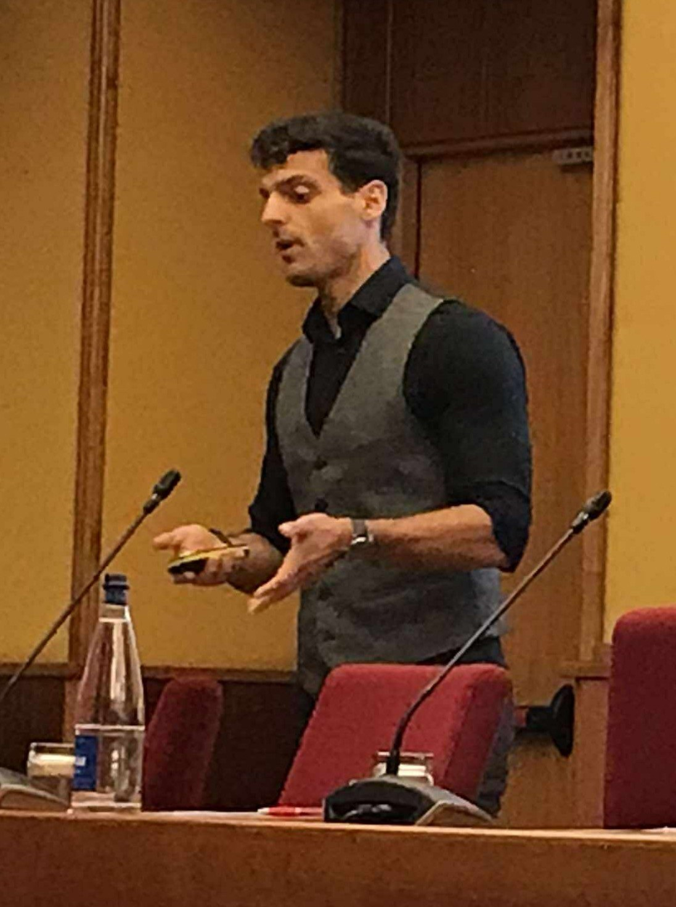

Michail's future research direction asks how shared representations across MRI, tissue architecture and gene regulation can reveal tumour states associated with progression, relapse and treatment resistance. The public-facing focus is on research questions, interpretability and validation, rather than unpublished implementation detail.
Assistant Research Professor | CRUK Cambridge Institute
Dr. Michail Mamalakis
Explainable, robust and clinically grounded AI for biomedical discovery, connecting medical imaging, neuroscience, histology, single-cell biology and trustworthy machine learning.
9+
years across medical imaging, explainable AI and computational biology
425k+
MRI scans informing current foundation-model research
L205
course director for AI-driven neuroscience and translational biomedicine
Profile
Researcher in trustworthy AI for health and science

Michail Mamalakis is an Assistant Research Professor at the University of Cambridge / CRUK Cambridge Institute, a Postdoctoral Transition Fellow in the CRUK Children's Brain Tumour Centre of Excellence, and an Affiliated Lecturer in the University of Cambridge Department of Computer Science and Technology.
His work develops explainable machine-learning systems for biomedical research, with current emphasis on paediatric brain cancer, neuroscience, multimodal data integration, protein and clinical language models, medical-image analysis, representation learning and mechanistic interpretability.
Research Interests
Explainable multiscale AI for brain cancer and biomedical discovery
Imaging phenotypes
Foundation models for neuro-oncology MRI, with evaluation strategies that prioritise calibration, robustness, uncertainty and anatomical interpretability.
Cellular and molecular states
AI methods that relate histological phenotypes, spatial organisation, gene programmes and cell-state transitions in paediatric brain tumours.
Cross-scale integration
Multimodal models that align imaging, histology and molecular representations while making evidential limits and missing data clear.
Trustworthy discovery
Explainability-first model design for biomedical hypotheses, biomarker prioritisation, reproducibility and responsible scientific interpretation.
Appointments
Academic and research roles
Assistant Research Professor
University of Cambridge / CRUK Cambridge Institute
Affiliated Lecturer
Department of Computer Science and Technology, University of Cambridge
Research Associate
Department of Psychiatry, University of Cambridge / E-BRAIN WP2 Grant
Research Associate
Department of Psychiatry, University of Cambridge / MRC Grant
Research Associate
IICD Department, University of Sheffield
Selected Publications
Explainability, biomedical imaging and scientific machine learning
Solving the Enigma: Deriving Optimal Explanations of Deep Networks
AI Open, 2025
doi.org/10.1016/j.aiopen.2025.02.001A Transparent Artificial Intelligence Framework to Assess Lung Disease in Pulmonary Hypertension
Scientific Reports, 2023
doi.org/10.1038/s41598-023-30503-4Artificial Intelligence Framework for Automatic Segmentation of Left Ventricle with Scar
Artificial Intelligence in Medicine, 2023
doi.org/10.1016/j.artmed.2023.102610Geometry-Guided Generative Representation for Functional Brain Graphs
Accepted at ICML 2026
ICML 2026 posterTeaching Policy
Research-informed, inclusive and application-driven education
Technical independence
Teaching should help students become critical computer scientists who can connect mathematical principles with implementation, evaluation and responsible use.
Authentic assessment
Projects, presentations and viva-style discussion test collaborative problem solving while preserving individual accountability and clear technical explanation.
Inclusive interdisciplinary learning
Complex AI topics become accessible through careful language, worked examples, transparent expectations, formative feedback and multiple routes into the same concept.
Principles of AI-driven Neuroscience and Translational Biomedicine
Course director and lead lecturer for L205 at Cambridge, covering deep learning, graph neural networks, transformers, explainable AI, mechanistic AI, neuroimaging, connectomics and translational biomedicine.
Teaching Highlights
L205 two-minute proof of concept
A short reel selected from lectures on catastrophic forgetting, attribution, and mechanistic interpretability.
Service and Recognition
Academic citizenship, review and mentoring
Reviewer and examiner
Reviewer for MICCAI, IEEE Transactions on Medical Imaging, IEEE Transactions on Image Processing, Elsevier biomedical AI journals, and EPSRC/UKRI grant applications. Examiner for PhD and MSc research work.
Awards and funding
EPSRC and UKRI access to high-performance computing facilities, IEEE TMI Distinguished Reviewer Gold Level, CRUK Cambridge Centre mini-grant, and University of Sheffield PhD scholarship.
Mentoring
Leads and advises researchers across MRI foundation models, paediatric brain cancer, single-cell and histology-informed modelling, and neuroscience.